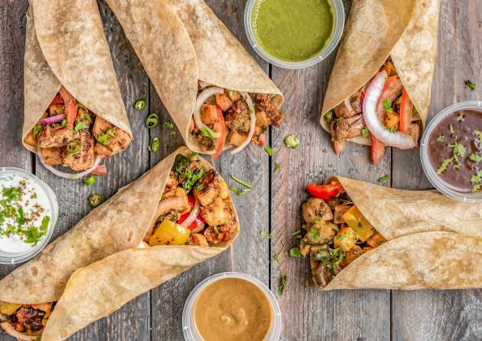
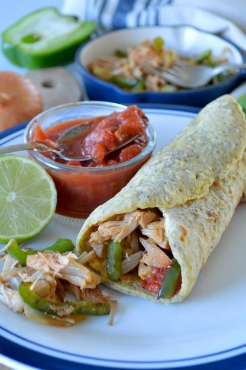
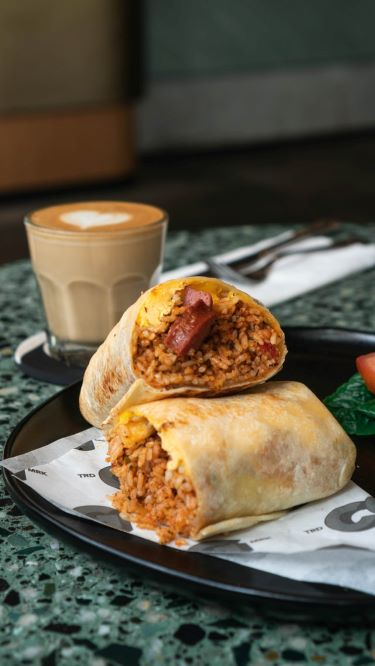

You may be familiar with our wet burrito, as they are some of our most popular menu items. Burritos are versatile, delicious and portable meals good for breakfast, lunch or dinner. At first glance, one might not think too much about the origin of this delightful food, but trust us when we say, the burrito’s history is worth a read.

The burrito we all know and love today is a staple dish in Mexican-American cuisine. Although often considered a traditional Mexican food, the burrito’s origins start in more recent times in Northern Mexico. One thing is for sure — the farther south in Mexico you go, the fewer traces of burritos you will find. One reason for this is because wheat was only grown in Northern Mexico after it was introduced to Mesoamerica in post-Columbian times. Burritos could have been brought to America as war food during the Mexican Revolution in the early 1900s. While ancient Mexicans had tortillas and ate food similar to modern tacos and enchiladas, the burrito differs as it is made with a wheat tortilla instead of a corn tortilla.

A burrito is one of the most versatile foods. It can be filled with the traditional meat and beans, or be filled with rice, salsa, guacamole, cheese, sour cream, lettuce and many other ingredients. At Burrito we have several options for burritos, including our breakfast burrito and Mexican BLT. Basically, anything wrapped in a flour tortilla can potentially be considered a burrito.